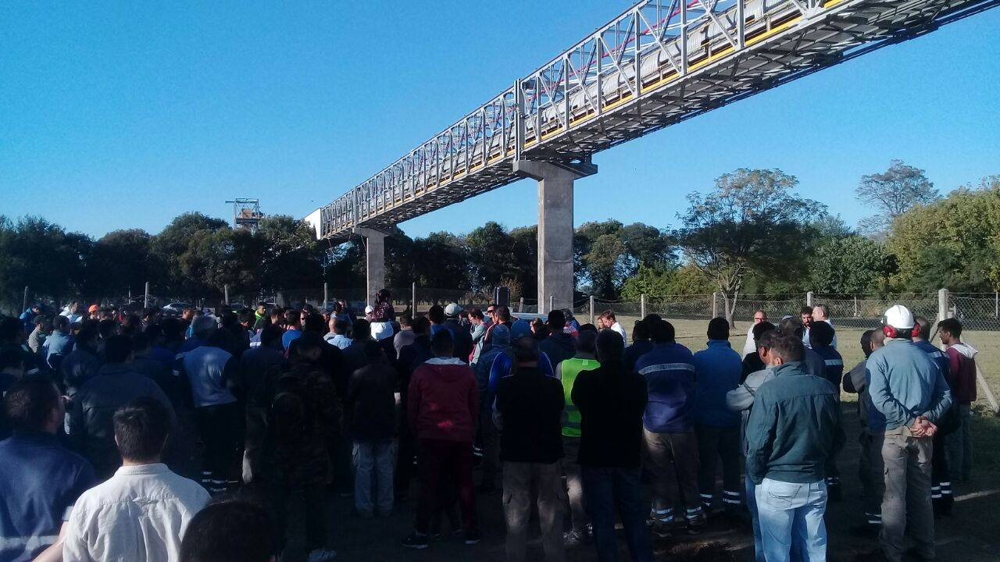

¡TODO EL APOYO A LA HUELGA ACEITERA!

La patronal de Cargill, la más grande de todas las patronales de la industria aceitera, trás mes y medio de conciliación obligatoria insiste con los despidos de 41 compañeros. Está bien claro, que el problema no es por baja de producción o rentabilidad: el año pasado ganaron 47 mil millones. La tozudez de la empresa tiene un carácter meramente político. Envalentonada por el gobierno macrista, los despidos son para correr el eje de la discusión paritaria y atacar de lleno a la Federación Aceitera. No hay que olvidarse que Reguera, ya se cortó solo y arregló el 15% a partir de enero. La patronal quiere dirigentes sindicales así como Reguera, que tienen la panza despellejada de tanto arrastrase.
Desde el PCO, reivindicamos el paso dado por el plenario de delegados nacional de ir al paro nacional por los despedidos y humildemente nos ponemos a disposición de la lucha y comprometemos todo nuestro apoyo en la medida de nuestras fuerzas, como lo hicimos en la huelga del 2015. Esta huelga como dijo Dávalos, va a ser muy dura, porque no solo va a ser contra Cargill (una de las empresas bandera del imperialismo yanky) y el conjunto de las patronales aceiteras del CIARA (Cámara de la industria Aceitera), sino básicamente contra el gobierno de Macri y también el provincial de Lifschitz, al cual no se le puede tener ninguna confianza.
Pero aún así, esta huelga se puede ganar, si nos preparamos para enfrentar todas las cuestiones y problemas que nos plantea la actual situación política.
El Macrismo viene cebado, y si la cosa se pone picante, no le va a temblar el pulso si tiene que reprimir, como ya lo hicieron con los Azucareros en Salta y Jujuy o el otro día en la refinería de OIL que mandaron automáticamente a la Gendarmería para no dejar cortar la ruta. Por eso va a ser muy importante que estemos preparados organizando la autodefensa. Para el gobierno es importante disciplinar a todos los sectores sindicales o comisiones internas que sean independientes y que no tranzan como los vendidos que dirigen la CGT. Otra cuestión importante, si la huelga se mantiene por un tiempo prolongado, es el fondo de huelga, es decir juntar plata para no terminar tan ajustados a fin de mes.
Sin embargo, lo más importante es algo que dijo Dávalos, “somos una misma clase”, por eso tenemos que reclamar el apoyo, de otros sindicatos o federaciones, pero que brinden un apoyo real y efectivo, no solo de palabra, en los discursos, por los aceiteros y por toda la clase obrera, porque o nos organizamos o nos van a reventar por separados. Por eso también hay que hacer un llamado a toda la clase obrera de la región. Por ejemplo, a todo el Movimiento Sindical Rosarino que en el caso de Empleados de Comercio también tuvieron despidos en Planta Alvear, a los Camioneros que están teniendo bajas por el cierre de la refinería OIL en San Lorenzo y a todos los otros sectores, docentes, partidos políticos de izquierda, organizaciones sociales. Por ejemplo, esta coordinación puede hacerse efectiva convocando a un plenario regional de delegados y activistas que prepare un paro regional.
Desde el PCO estaremos en primera línea apoyando e impulsando la lucha.
¡Viva la huelga de los Aceiteros! ¡Viva la lucha de la clase obrera!